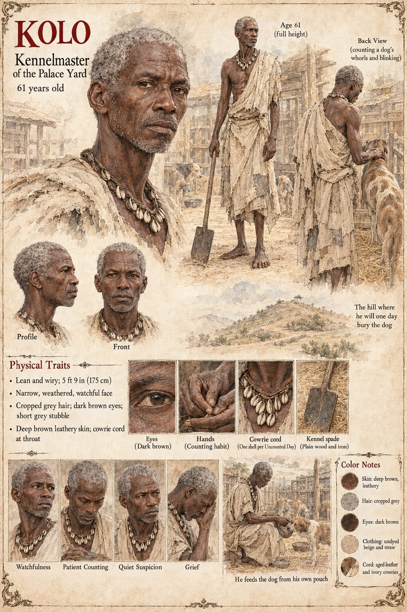

Kolo
Kennel-hand, then kennelmaster of the palace stable-and-kennel yard · keeper of the dog by Sana's charge · 11 or 12 when first met, 61 when the dog dies, dies at 79
A wiry, watchful boy of eleven or twelve when the manuscript first meets him, the household's senior kennel-hand, whose entire domain is the palace's modest stable-and-kennel yard and who takes a proprietary, faintly jealous interest in any animal that crosses into it without his permission. He begins, without admitting it, to save the best table-scraps for a dog that is not, by any household ledger, his to feed. On the morning after Damba dies he is found sitting alone in the empty yard, dry-eyed and furious, with the dog's head across his knees; Sana kneels, tells him that the dog is his now and that he must never let anyone convince him it should be given up, and Kolo remembers for a very long life that the healer's voice cracked on the word never.
He counts. On every Uncounted Day, the one day of the year that belongs to no month and no week, he threads a single cowrie onto a leather cord beneath his shirt, from the first winter after the healer leaves; it is at the twenty-second shell that he notices the dog has never grown grey at the muzzle. He counts the arms of the whorl at its withers, eight and thirteen, with a wet thumb, as a man counts the coins in a purse he does not want to find short, and its blinks, eleven to the minute. He was not a man who trusted his own eyes about a thing he loved, so he counted. When a stable mule kicks the dog in the ribs he sits with it through the night and by the third evening finds nothing under his palms but ribs, and learns only that it mends whatever happens to the dog and never what the dog was born with. He dislikes children and princes and distrusts anyone who arrives at his yard with a retinue; when a six-year-old prince with a cloth of honeyed millet cakes turns up he tells the boy that he may carry water, and, against every principle he owns, begins to like Sekou.
When the queen's steward has the kennel hand Tuma salt the dog's fish, he notices within the hour, because it blinks eight times to the minute where it has always blinked eleven. He tastes the fish, does the sum (one queen, one kennelmaster, one boy with a coin he cannot spend, and a dog that cannot testify), accuses no one, throws the fish away and from that morning feeds the dog from his own pouch, with fish he has bought himself with his own copper. He keeps one exception, the keg Hawa sends up on every Uncounted Day, which he could not have refused in front of the wardens without announcing that he suspected the woman who sent it. When Fode asks, as sideways as a Recounter knows how, whether a man who loved an animal might not do best to carry it beyond the northern wells, Kolo does not look up from the fish he is sorting: I was told never. Captain Wuro arrests him on a charge of sacrilege, and Sekou's wardens find him in the cellar of the guardhouse with a split lip and the dog asleep across his feet.
On the Uncounted Day he adds the fiftieth cowrie to the cord, drinks his horn from Hawa's keg slowly, sitting on the water-jar with the dog across his feet, and is asleep before the wardens on the wall have finished theirs. He wakes late into the first morning of Averin and understands before he has crossed the yard exactly what kind of horn of beer he was given. He sits with the cold body across his knees, counting its blinks, out of habit, until he understands that there are no more. He digs the grave himself, with a kennel spade, in the corner where the dog piled its shoes for half a century, and lays the cord with its fifty cowries beside the body. He outlives it by eighteen years, will not let any of the animals that follow be called by the old name, never learns who laid a small right-footed shoe on top of the hill when the dog had only ever stolen left-footed ones, and dies at seventy-nine, on the Uncounted Day, on the water-jar in the yard, with a dog across his feet. The trader Yandé takes a puppy from that spring's litter; he tells her what the healer once told him.
The manuscript gives wiry and watchful at eleven or twelve, lean and watchful past fifty, and the cord; the rest is invented. The sheet's age of 61 agrees with the manuscript's arithmetic, as do its 5 ft 9 in (175 cm), narrow weathered face, cropped grey hair, short grey stubble, dark brown eyes, deep brown leathery skin, patched undyed wrapper and kennel spade, which are its own, as are its panels Watchfulness, Patient Counting, Quiet Suspicion and Grief and its scenes He feeds the dog from his own pouch and The hill where he will one day bury the dog.
“I was told never”